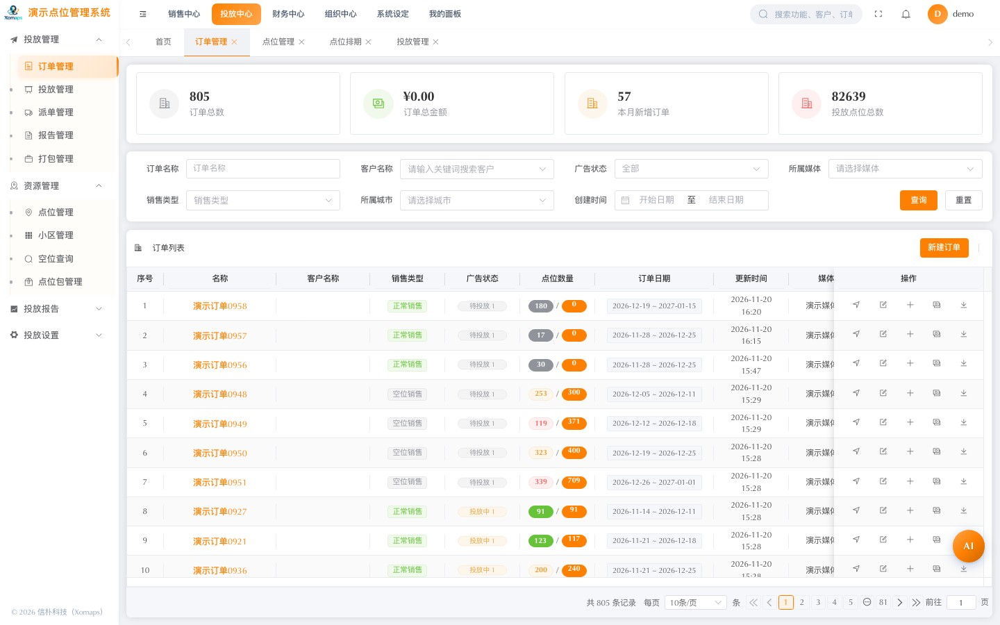
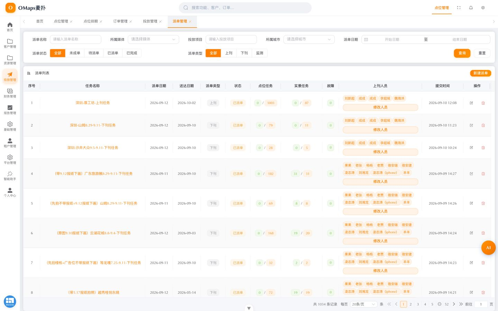
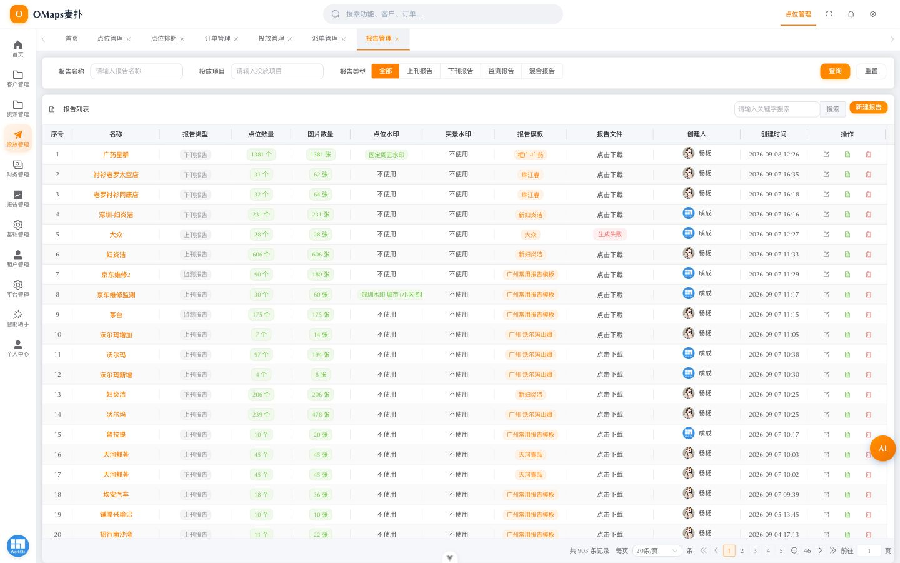
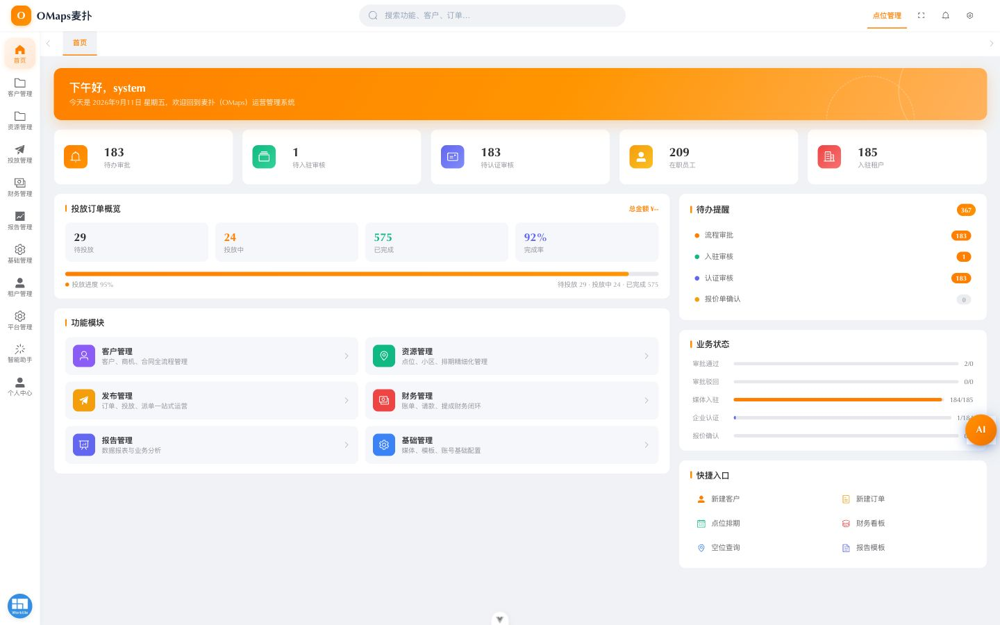
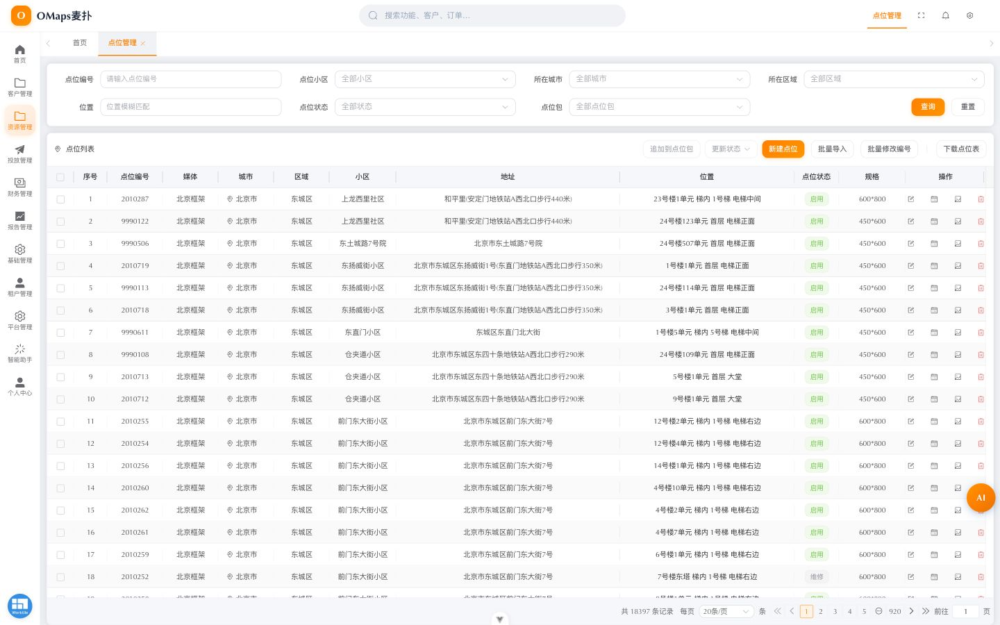
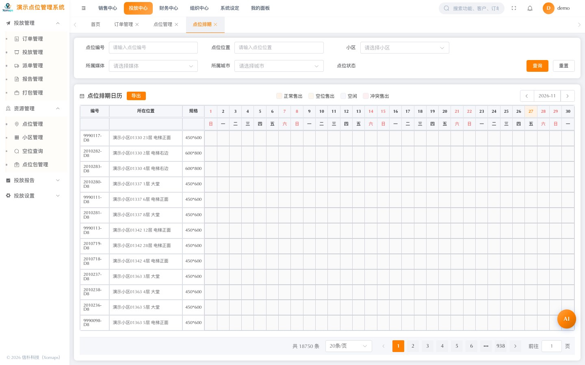
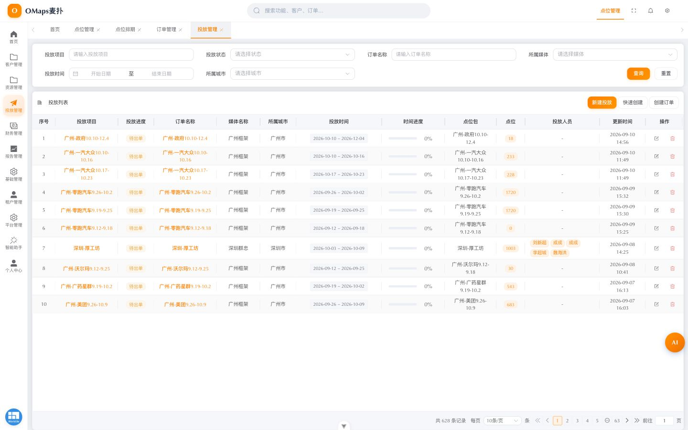

01
选点
空位选点、批量选点、地图选点，多方式快速锁定目标点位。
覆盖选点、锁点、派单上刊、完工报告全流程，关键环节全部数字化、可视化。
空位选点、批量选点、地图选点，多方式快速锁定目标点位。

创建订单与投放，点位排期锁定，防止资源冲突。

上传画面、设置派单、指派上刊人员，任务实时推送。

自动生成完工报告与 PPT 报告，打包下载原图，提升客户满意度。
大多数点位台账只给你一张表。Xomaps® 把点位落在地图上，空位、片区、点位包、现场实景都在同一个视图里——这是它和其他点位管理系统最直接的差别。
标准化流程，让每个环节清晰可控、责任到人。
多条件筛选可用点位，地图选点，批量创建点位包方案。
创建订单与投放，点位排期锁定，防止资源冲突。
上传画面、设置派单、指派上刊人员，任务实时推送。
自动生成完工报告与 PPT 报告，打包下载原图，提升客户满意度。
从资源到投放，从排期到数据，每个环节都有专属模块。

业务关键指标一屏总览，实时掌握经营动态。

媒体资源、位置信息、所属小区与状态一站式维护。

点位投放排期一目了然，锁定排期防冲突。

投放执行与进度跟踪，多维度掌握投放情况。
点位是资源，客户和合同才是收入。Xomaps® 把商机到合同的链路也放在同一套系统里，销售不用在表格、聊天记录和合同文件夹之间来回倒数据。
客户信息与联系人集中维护，点开就能看到这家客户名下投过哪些点位、走过哪些订单，不用再翻历史合同。
登记商机来源、优先级、预估金额与负责销售，成单后直接转成合同，跟进过程不再散落在各人手里。
合同编号、状态与变更都留痕，改了什么、谁改的、为什么改都有记录，合同能直接关联到投放与请款。
点位资源方的采购合同单独管，物业（供应商）档案与付款挂钩，采购与销售两条合同线不混在一起。
合同、请款、提成、入驻申请走同一套审核，按角色与流程分派待办，谁能审、审到哪一步都清楚。
点位覆盖率与使用率按城市、区域、小区逐层拆开算，投放总览、投放任务与月度考勤各有独立报表。
上刊人员的派单完成情况按月汇总，外包施工队的作业量有据可查，结算外协费用时不必凭印象。
媒体入驻、客户入驻、企业认证可在线提交，平台侧分级审核；多租户数据隔离，集团与下属公司各管一摊。
一条主线串起来：从商机到回款
每个环节的单据都能往上一层追：一笔提成能追到划拨单，划拨单能追到到款与请款单，请款单能追到合同与投放订单。
财务不是最后补的一张表。请款、到款、划拨、发票、提成、对账、账期结转都在同一套数据里跑，单据之间彼此可追。
按合同发起请款，登记请款日期与到期日期，逾期自动标出来，业务和财务看的是同一张单。
登记到款方式与金额，按请款单逐笔划拨，已划拨与剩余可划拨实时可见，划拨需走审核，不靠口头对账。
发票号码、类型、税率与开票金额建档，关联请款单与合同，作废必须填原因，开票与收款不会对不上号。
提成金额按「划拨金额 × 提成比例」自动算，关联合同与销售人员；比例或金额都能手改，提交后进审核待办，到款才结算。
按客户看欠款与风险敞口，超期、超额的单子提前亮灯，不必等到月底结账才发现问题。
按对账期间与账户类型出对账单，客户侧和内部记的是同一份数，对账不再靠互发 Excel 对差额。
按会计年度与月份开闭账期，当前账期唯一且受控；支持年度结转，跨年数据不会串。
采购合同对应付款单独走流程；销售业绩看板按人、按合同、按期间汇总，提成有依据。
结算链路
说明边界：提成按「划拨金额 × 比例」单级计算，到款后才结算。多级阶梯提成、跨项目拆账、集团合并报表属于定制范围，实施前单独评估。
内置 Copilot 销售助理（基于 AgentScope），检索的是你自己库里的点位、档期和单价，不是通用大模型在猜。销售不必先学会用系统，问一句就能拿到可投组合。
帮我查北京朝阳区电梯广告的可用点位，预算 30 万
已按「朝阳区 · 电梯框架 · 当期可投」筛选，从点位库取到可用点位后，按预算拆成三档组合：高覆盖 / 均衡 / 控成本。每组都附点位清单、档期与单价，点开可以继续调整或直接生成投放方案。
客户要写进周报，帮我汇总本周进展
已汇总本周客户拜访、商机进展与在谈投放方案，生成周报初稿，可在工作汇报里继续编辑。
能力边界：Copilot 负责找点位、算预算、出方案、写记录。照片是否错刊、遮挡、翻拍，仍由水印、定位与人工复核判定，不做 AI 图像质检。
上刊人员在现场用微信小程序或独立 App 接收任务、定位签到、拍照上传，关键环节自动留痕，后台实时可见。地下车库、电梯厅这些常年没信号的地方，也照样能拍完再传。

一套系统，两种交付模式，按需选择最合适的部署方案。
三种交付方案覆盖从十人团队到集团化经营，报价取决于席位数、点位规模与启用模块。
适合点位规模 500 以内、团队 10 人以内的媒体公司。
适合多点位包经营、跨城市作业、需要经营分析与财务对账的团队。
点位规模更大可选旗舰版 ¥25,800/年：不限点位、企业微信应用与 AI 能力、优先支持。
适合对数据合规、内网隔离、深度定制有硬性要求的企业。
三个版本均包含历史数据迁移协助与上线培训；本地部署版年度维保为授权费的 15%，超出标准规模的账号与点位按档位加购。SaaS 版支持 14 天全功能试用（录 10 个真实点位跑完整流程）。最终价格以商务报价单为准。
选型最怕买回来才发现对不上。这里把擅长和需要提前对齐的部分都写出来，省掉一轮试错。
六大核心能力，全方位提升户外媒体管理效率。
实时业务仪表盘，关键指标随时掌握，一屏总览全局。
从订单创建到执行完成的全流程管理。
GPS 定位 + 拍照上传，资源状态一目了然。
移动端接收任务，现场实时上报进度与异常。
现场数据采集与云端分析结合，投放效果实时可见，辅助科学决策。
按模板一键生成专业 PPT 报告，自动排版、导出分享。
电梯海报与社区灯箱是社区媒体最常见的两种点位形态。下面三个阶段取自同一家运营商的真实上线过程，按约定不披露客户名称。
关于媒体类型、数据迁移、上线周期、财务能力与收费方式，这里先说清楚。
支持。系统以"点位"为核心抽象，每个点位可挂位置、媒体类型、规格、所属小区或商圈、当前状态等属性。电梯框架、社区灯箱、道闸、候车亭、公交车身、户外大牌都可以按你自己的分类体系录入；一家公司同时经营多种媒体类型也没有冲突。
可以。系统提供标准导入模板，点位、客户、历史订单与排期都能批量导入。导入前会做校验，重复的点位编码、冲突的排期会先提示出来，不会把脏数据写进系统。历史数据量较大的客户，实施阶段由我们协助清洗后再导入。
推得动，关键是入口要足够轻。上刊人员用微信小程序即可，不需要下载安装 App；任务以列表形式下发，点进去就是"签到 — 拍照 — 提交"三步，现场操作平均 1 分钟内完成。上线首周我们提供现场或远程带教，确保每位师傅独立完成一次完整上刊。
不必二选一，也不必都用。日常上刊用小程序最轻；需要离线作业、大批量拍照上传或更完整的功能时用独立 App。两端共用同一份数据，后台看到的结果完全一致，团队可以混合使用。
能。报告模板可配置封面、版式、点位照片排布方式与说明字段，一次点击生成 PPT 报告，同时打包导出原图压缩包，直接发给客户。模板可以按客户或项目分别保存，下次复用。
核心业务功能一致，差别在交付形态。SaaS 版开箱即用、自动升级、按年订阅；本地部署版部署在你的服务器上，支持深度定制与二次开发，按授权 + 年度维保计费。选哪个主要取决于数据合规要求，而不是功能多少。
传输全程 HTTPS，存储层做多租户隔离、敏感字段加密，按角色控制数据可见范围，关键操作留有审计日志。如果你的合规要求数据不能出内网，直接选本地部署版，点位数据完全留在自有服务器。
SaaS 版通常 1–2 周完成初始化、数据导入与培训，即可投入试用。本地部署版需要准备服务器、实施部署、迁移数据，一般 4–8 周，具体取决于数据量级与定制范围。签合同前会给你一份明确的实施排期。
标准流程（选点 — 锁点 — 派单上刊 — 完工报告）覆盖绝大多数场景。审批流、自定义字段、报表口径可以按企业习惯配置；超出配置范围的个性化需求，本地部署版支持二次开发对接。
按席位数、点位规模与启用模块组合计价：SaaS 按年订阅，本地部署为一次授权 + 年度维保。报价前先做一轮业务调研，出方案和报价单，列明包含的实施、培训与维保内容，不做隐形收费。
能操作。点位按经纬度在地图上落位，地图视图做聚合展示；可用点位按区域、规格、档期筛选后在地图上高亮；还可以在地图上框选一个片区，直接得到范围内的小区数与点位数。点位包内的点位也能成组上地图，给客户讲方案时不必只对着编号表。点位实景照片同样挂在点位上，随时可查。
断网可以作业。照片先暂存在手机本地并标记为待上传，网络恢复后自动补传；上传失败的会单独标记，可一键重试。电梯厅、地下车库这类常年没信号的位置，作业逻辑不受影响，也不会因为没网丢掉当期照片。
Xomaps® 的核心是静态平面媒体——大牌、候车亭、灯箱、道闸、墙体这类需要现场张贴、拍照留证的形态。LED 数字屏纳入同一套点位、排期与订单体系，并支持把全量轮播清单按版本整体下发到租户自接的播控系统（播控衔接层）；但系统不做播控引擎与屏体播放控制，屏和播控账号仍在租户手里，播放凭证现阶段以人工验收兜底，也不含 SSP / DSP 程序化交易对接。以程序化售卖为主营的公司，仍不适合把 Xomaps® 当作主系统。
不是只有一张对账表。系统里有请款（带到期日与逾期标记）、到款登记、划拨审核、发票（号码、类型、税率、作废原因）、提成、客户对账、会计期间开闭与年度结转，还有按客户的欠款风控视图。提成按"划拨金额 × 提成比例"自动算，关联合同与销售人员，到款后才结算。
边界也要说清楚：这是单级比例提成，不是多级阶梯。如果提成规则涉及多级阶梯、跨项目拆账、集团合并报表，那属于定制范围，实施前单独评估——能配就配，配不了就通过开放接口和你原有财务系统对接，不硬扛。
有内置 Copilot 销售助理（基于 AgentScope），检索的是你自己库里的点位、排期和单价，不是通用模型在编。能做的：按区域、媒体类型、档期查可用点位；按预算拆点位组合；一句话生成投放方案；把口述的拜访内容转成客户活动记录；汇总周报月报。
不能做的也要讲明：它不做图像质检。照片是否错刊、遮挡、翻拍，仍由时间地点水印、GPS 定位与人工复核判定。需要系统自动判图的，Xomaps® 目前不满足。
能。系统提供标准的 OpenAPI 接口，接口清单与参数以接口文档为准，可按需对接财务、OA、ERP 或自建中台；同时提供 MCP 协议接入，AI 客户端可以直接调用点位、排期等查询能力。本地部署版可按企业内网规范调整接口与鉴权方式，SaaS 版通过开放接口集成。
专业团队随时为您提供支持与解决方案。